偏重总量和政策，关注经济总量、价格、政策、信用、外需和就业如何变化。
GDP / CPI / PPI / PMI / 社融 / M2 / 财政收支 / 进出口 / 工业增加值典型客户用途宏观策略、资产配置、利率判断、政策研究
EDB TRAINING / DATA PLATFORM
从宏中观数据、行业数据到经营数据的业务培训
NAVIGATION
OUTCOME
PRODUCT POSITIONING
面向投研和数据应用场景，覆盖中国宏观、地方经济、国际宏观、行业经济和部分企业经营指标的标准化经济数据库。
BUSINESS MAP
四大模块分别对应“全国层面 - 区域层面 - 海外层面 - 产业层面”的研究问题。
偏重总量和政策，关注经济总量、价格、政策、信用、外需和就业如何变化。
GDP / CPI / PPI / PMI / 社融 / M2 / 财政收支 / 进出口 / 工业增加值偏重区域比较和城投财政，关注省市、城市群和经济圈的增长、财政、人口、产业结构差异。
地区GDP / 财政收入 / 地方债 / 固定资产投资 / 人口 / 产业增加值偏重外部经济与全球资产联动，关注全球主要经济体变化，以及中国与外部经济如何联动。
美国CPI / 非农 / 联邦基金利率 / 欧元区PMI / 全球贸易 / IMF / WB / OECD偏重产业链景气、供需和价格，关注产业或产品的供需、库存、开工率和进出口变化。
钢材价格 / 煤炭库存 / 化工品开工率 / 汽车销量 / 半导体销售额 / 公司产销量CLASSIFICATION LOGIC
描述中国整体经济状况的总量或平均值，不包含具体省市细节。
必须关联具体省级、市级、经济圈或地理分区才体现价值。
描述中国以外国家、区域集团或全球整体的宏观表现。
核心维度是特定行业、产业、产品或经营业务。
PART 01
从 1.0 套表到 2.0 指标治理，理解 EDB 的底层组织方式。
EDB 1.0
EDB1.0的四个模块虽然在来源、频率和维度承载方式上有所差异，但底层都围绕“指标表 - 数据表 - 树形表 - 常量表 - 维度信息”形成套表关系。
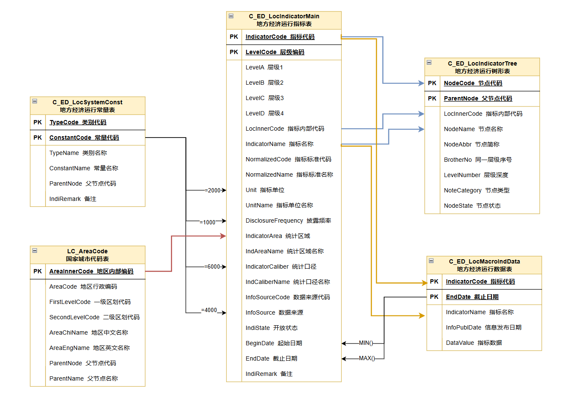
TABLE MAP
STRUCTURE COMPARISON
以模块套表为主，围绕 IndicatorCode 关联指标、数据、树形、常量和维度。
以标准化指标治理为核心，统一指标信息、时间序列、目录树、维度标签和辅助功能。
EDB 2.0
统一记录指标名称、代码、来源、频率、单位、授权等基础信息。
中国宏观基础数据、中国宏观特色数据、宏观债券市场数据、行业经济基础数据等，按场景存储指标值。
宏观指标层级表、地方经济树形表、国际宏观树形表、行业经济树形表等，支撑目录检索、前台展示和层级浏览。
EDB业务标签表、EDB指标维度信息表、`edb_ind_dim_info_all` 等，支持标准名称、维度识别、智能问数和场景标签。
海关产品代码表、数据更新规则表、单位换算表等，用于商品映射、更新监控、单位换算和易用性提升。
2.0 TABLE MAP
WHY 2.0
“销量”可能是汽车销量、商品房销售面积、企业产品销量，也可能是当期值或累计值。
“同比增速”“同比增长率”“同比”在不同来源中可能表达近似含义。
区域、主体、产品、计价方式、统计期间和数据类型常常没有完整写进名称。
只靠自然语言名称，系统难以稳定识别、推荐、下钻和解释指标。
DIMENSION SYSTEM
15 DIMENSIONS
指标所描述的主要地理范围或经济区域，可以是国家、地区、省市、城市群或特定区域。
数据发生在哪里？
用于区域比较、地方经济研究、国际宏观对比和地域筛选。
当一个指标同时涉及两个相互独立的区域时，用于记录第二个区域，常见于贸易、流向、来源地与目的地分析。
另一个相关区域是谁？
用于理解进出口来源/去向、跨区域流动、区域之间的比较或关系。
指标由企业自身披露时，用于识别披露数据的企业主体。
这项数据由哪家企业发布？
用于上市公司公告、企业经营数据、月度经营公告等场景的主体识别。
指标统计对象指向某一企业或其业务单元时，用于识别被统计的企业对象。
这项数据统计的是哪家企业？
用于区分“披露方”和“被统计对象”，特别适用于集团、子公司或第三方统计企业数据。
指标描述的非区域、非企业类统计对象，可以是人群、机构、市场、资产类别、政策对象或业务对象。
统计对象是谁或是什么？
用于区分居民、企业、金融机构、财政部门、车辆类型、资产类别等观察对象。
指标最核心、最不可再拆的度量含义，表达“到底在统计什么”。
核心度量是什么？
用于识别产量、销量、库存、价格、金额、数量、利润、指数、利率等基础统计目标。
对核心度量的必要补充，用于说明统计方法、属性、范围或不适合并入主名称的限定含义。
核心度量还需要什么解释？
用于区分合计、小计、口径属性、统计方法、特定属性说明等补充信息。
指标值的统计方式或结果形态，说明数值是当期、累计、期末、同比、环比、增量还是其他口径。
这个数值按什么口径计算？
用于判断能否相加、能否横向比较、能否做同比环比分析。
指标披露或统计的时间颗粒度与期间类型，例如日、周、月、季、年或不定期。
数据覆盖哪个时间窗口？
用于判断更新节奏、分析周期、时间序列对齐和报表展示频率。
用于说明价格或金额类指标的计量基础，例如现价、不变价、基期价、名义口径或实际口径。
价格或金额按什么价格基础表达？
用于区分名义值与实际值，避免把未剔除价格影响的数据与可比价数据混用。
保留数据源披露或指标名称中出现的行业表达，用于反映指标原始所属行业语义。
指标原文属于哪个行业？
用于行业经济检索、行业口径保留、原始披露语义还原。
保留非海关场景下指标所涉及的产品、服务或业务品类表达。
指标描述的是哪个产品或服务？
用于产业链研究、产品价格、产销量、库存、开工率和企业主营业务分析。
针对海关贸易数据形成的商品维度，用于表达进出口统计中的商品或商品类目。
贸易数据对应哪个海关商品？
用于进出口金额、数量、单价、贸易伙伴和商品结构分析。
对产品或行业维度的补充说明，承载产品规格、用途、形态、市场层级或其他不宜作为主产品的说明。
产品或行业还需要什么补充说明？
用于细化产品属性、规格差异、应用场景和口径说明，提升检索与解释准确性。
由原子指标和其他维度要素组合形成的业务化表达，用于保留拆分后仍需要整体理解的专业术语或复合含义。
组合后的业务指标如何理解？
用于解释占比、价差、利润率、结构项、细分专业指标等派生概念。
EDB2.0 不把所有限定信息都塞进指标名称，而是把难以完整表达的要素沉淀为维度标签。
用户看到的指标名称仍保持简短、易读、便于传播，不会被冗长口径拖垮。
系统和产品筛选层保留更完整的结构化信息，用于区分相似指标、解释口径差异、支持智能问数并增强输出稳定性。
维度体系让指标能够被准确理解、稳定检索，并支持组合分析。
COMPLIANCE
宏中观数据中既有政府公开数据，也有采购数据、代理数据、协会数据、第三方资讯数据和公司披露数据。不同来源在是否可展示真实来源、是否可商用、是否可用于大模型训练或问答等方面可能存在差异，因此需要在指标级或来源级建立清晰授权类型。
免费公开、聚源加工免费数据、已授权数据，通常可展示真实源或聚源计算。
付费但未授权、友商采集、涉付费加工，存在合规风险，展示需谨慎。
已侵权或无法言明采集渠道，或转载需授权的数据源，需按规则处理。
涉及全国银行间同业拆借中心、中国外汇交易中心、中证指数公司等授权公开源。
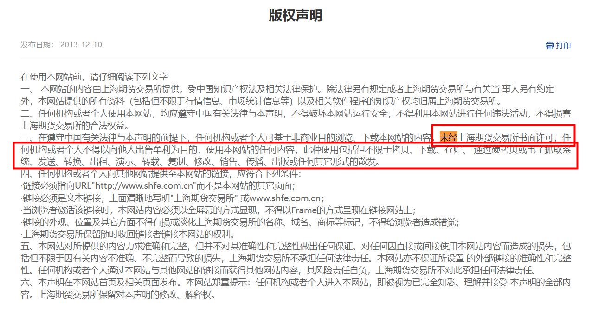
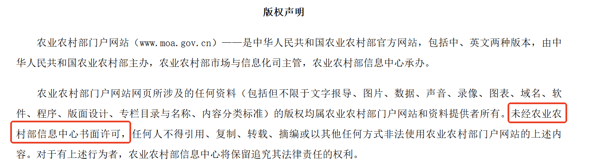
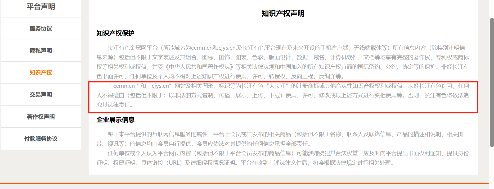
PART 02
把宏观数据从“零散指标”变成经济运行、政策变化和市场定价的基础语言。
MACRO FRAMEWORK
经济处于什么阶段，是改善还是走弱。
通胀压力是上升还是下降。
货币政策和财政政策偏宽松还是偏收紧。
利率、汇率、信用和流动性是否支持实体经济。
如何影响股票、债券、商品、房地产和外汇。
TRANSMISSION
先判断政策和总量变量在哪里发力。
再去找钢铁、地产后周期、出口链等中观指标做验证。
最后下钻到公司经营数据，看景气是否真的传导到基本面。
DATA SOURCES
www.safe.gov.cn各币种汇率、国际服务贸易、跨境资金相关数据。
www.chinamoney.com.cn汇率与外汇市场公开信息，日度跟踪价值高。
www.chinamoney.com.cnSHIBOR 利率等银行间资金价格，日频为主。
www.chinabond.com.cn国债、企业债、城投债收益率与期限结构。
www.chinatax.gov.cn税务与征管相关数据，可辅助观察财政与经营活跃度。
www.audit.gov.cn债务审计和专项审计结果，常用于地方债与财政核验。
www.mofcom.gov.cnFDI、对外直接投资、外贸投资政策与部分公开数据。
www.mohrss.gov.cn就业、人力资源与社保相关公开信息。
NBS GUIDE
通过“数据发布与解读”查看发布日程和新闻稿。
全国、省、主要城市；全国和省级有月、季、年频次。
公报、数据库初值、统计年鉴、数据库调整值之间存在时效差异。
人口普查 10 年一次，经济普查 5 年一次，可能修正历史数据。
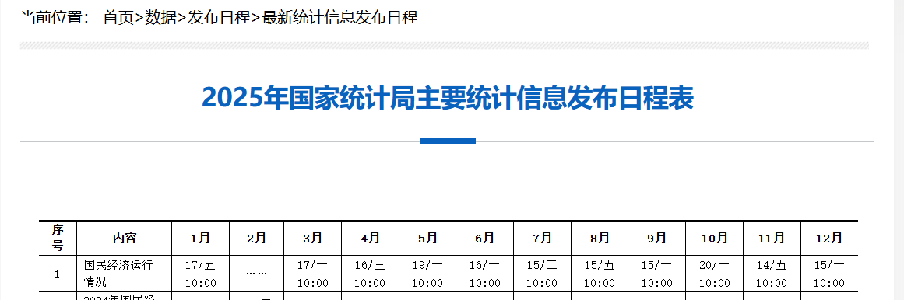
MOF GUIDE
月度披露财政收支、地方政府债务、国有及国有企业经济数据、彩票销售等。
年度财政决算通常在 7-9 月集中披露上一年度数据，可通过“全国财政决算”专题追踪。
信息公开和新闻稿会不定期披露指标，搜索是补抓口径和专题信息的重要入口。
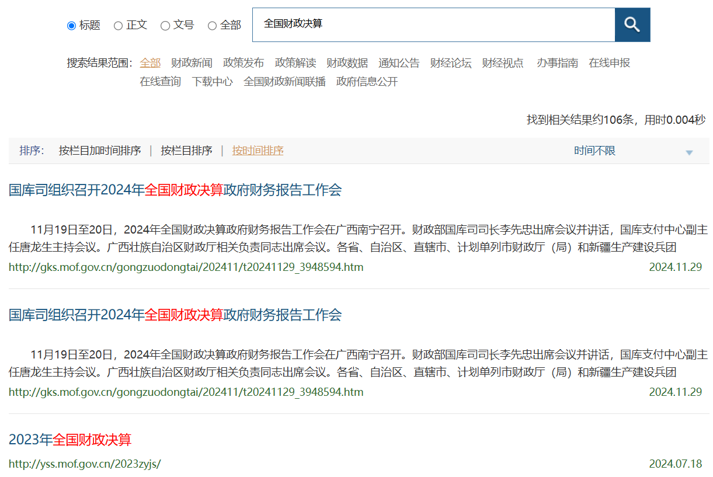
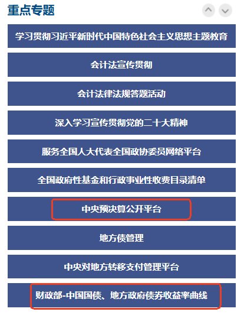
财政政策力度、地方债压力、政府性基金收入、土地出让与地方财力。
必须区分预算数、预算执行数、决算数，以及一般公共预算、政府性基金、国资经营和社保基金口径。
PBOC GUIDE
年度和月度数据以表格形式披露，覆盖货币信贷、金融统计等六大板块。
货币政策执行报告、人民币汇率、金融市场运行等信息分散在不同栏目。
央行站内信息分散、利率数据多，很多时候需要靠关键词搜索定位原始披露。
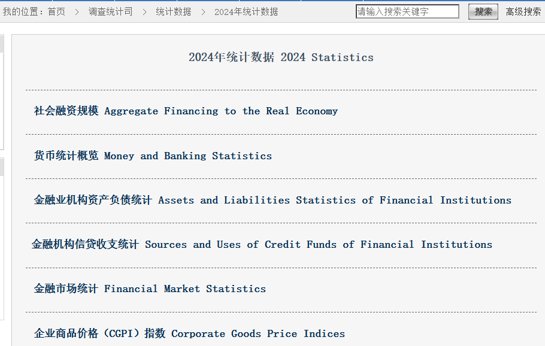
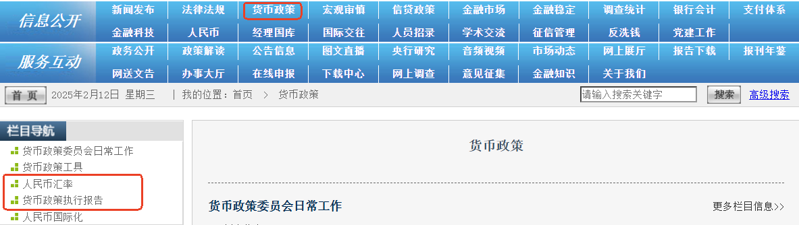
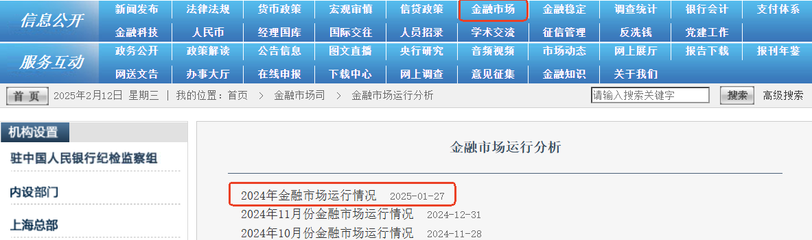
社融、M2、金融机构信贷收支、利率、金融市场运行、货币政策执行报告。
社融不能只看总量，要同时看结构。若主要靠政府债券拉动，政策融资强但实体需求未必修复。
GAC GUIDE
每月第一时间披露核心进出口初值，适合快速判断外需方向。
录入数据的主要来源，表格化更完整，常见人民币和美元双口径。
可补充商品、贸易伙伴、贸易方式等细分维度，EDB 已采集 2/4/6/8 位编码进出口数据。
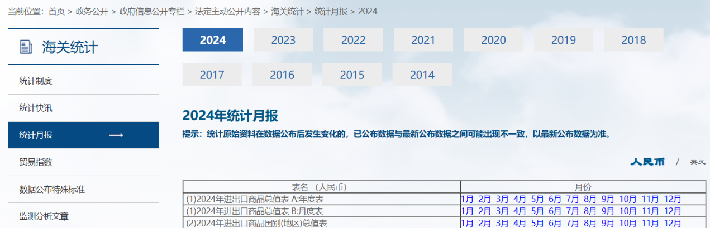
外需强弱、出口链景气、贸易伙伴变化、商品结构与量价拆分。
既要追求时效，也要注意修订。快讯看初值，月报看调整值，部分指标次年 12 月还会再修上一年度数据。
NDRC GUIDE
以月度统计数据为主，兼具宏观运行和专项领域的跟踪价值。
PPP 项目数、重大项目推进、投资相关信息常用于判断政策落地和基建链条。
价格调控、保供稳价、产业政策通知等信息，常作为行业研究的重要政策背景。
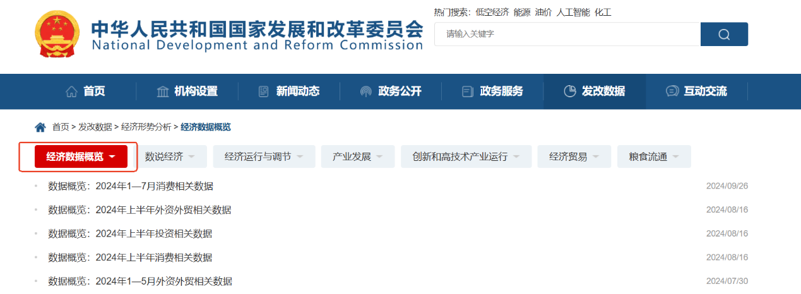
PPP、资产负债表、价格与政策方向，以及项目推进带来的投资线索。
发改委很多价值不在单个统计表，而在“统计数据 + 政策通知 + 项目披露”的组合阅读。
FAQ
LOCAL ECONOMY
LOCAL FAQ
GLOBAL MACRO
GLOBAL SOURCES
跨国家比较、全球经济展望和中长期趋势判断。
政策利率、资产负债表、货币供应和金融条件。
CPI、PPI、GDP、就业、零售、工业生产和贸易。
能源、农产品、金属的产量、库存、消费和价格。
把宏观发布与资产价格反应连接起来。
PART 03
把宏观变量继续往下落到产业链景气、供需变化和公司基本面验证。
INDUSTRY ECONOMY
经济是否改善
价格、库存、产量、销量、开工率、进出口、利润、运价、票房、客流
盈利是否改善，经营是否验证
INDUSTRY QUESTIONS
销量、订单、开工率、客流、票房、发电量、货运量
产量、产能利用率、检修、开工率、库存
现货价格、期货价格、价差、PPI分行业
厂库、社库、港口库存、渠道库存
出口金额、出口数量、出口价格、海外PMI
INDUSTRY NAVIGATOR
蔬菜、棉花、生猪等价格指数，农产品期货价、现货价，农产品产销量，生猪屠宰量、生猪存栏量、棉花库存，农产品进出口，上市公司经营数据，国际农产品供需数据等。
农业农村部、发改委、国统局、博亚和讯、中国养猪网、中国饲料工业信息网、中国玉米网、USDA。
环渤海动力煤价格指数，动力煤、无烟煤、原油、汽柴油等分品种分国别分地区价格和产量，6大电厂耗煤量，煤焦炭、原油库存，煤及原油进出口、全球钻井平台数、储量和美国能源数据等。
煤炭资源网、EIA、BP、我的钢铁网。
乳制品价格、葡萄酒价格指数、白糖价格、恒天然价格、酒及乳制品产量、食品进出口、分国别方便面需求数据。
国统局、世界方便面协会、商务部。
柯桥纺织、盛泽丝绸、义乌小商品城、嘉兴茧丝等指数，羽绒价格、纱线、坯布价格指数，布纱全国和分地产量，纺织品进出口数据。
中国柯桥纺织指数、义乌中国小商品指数、中国棉花网、USDA。
中纤价格指数，化工产品期货价、现货价，化工产品产销量、开工率、库存、进出口等数据。
百川资讯、隆众化工、BP、ICE、EIA、郑商所、大商所、中国橡胶信息贸易网。
主要纸品全国和分地区产量，各类纸及纸板消费量、纸浆消耗量、废纸回收率、重点造纸企业产量、纸业进出口，艺术品价格及指数等。
天津艺术品交易所、中国造纸协会、中国义乌小商品指数。
中关村电子信息产品价格指数、台湾电子市场指数，液晶面板、LED、闪存等价格，全球半导体销售数据，液晶面板、手机出货量和韩国电子行业数据。
信通院、韩国信息通信促进会、国际半导体设备与材料协会、witsview、中国半导体行业协会。
电视、冰洗、空调、微波等产品产量、销量、库存量、出口量、线上线下销售额，以及空调分品牌线下零售量、零售额、市占率、均价等。
国统局、海关、产业在线、中怡康、全国家用电器工业信息中心。
铁矿石、各类钢材的价格、产销量、储量、库存、进出口等数据。
我的钢铁网、钢之家、西本新干线、兰格钢铁网、国际钢铁协会、中国钢铁工业协会等。
铜铝铅锌期货价、国内外现货价，小金属、贵金属、废金属价格，有色品种产销量，港口和社会库存，进出口，分国别钴矿、锂矿、稀土产量和储量，各国央行黄金储备等。
我的有色网、长江有色金属网、中国金属网、ZZ91再生网、世界黄金协会、USGS。
水泥、玻璃分地区价格，全国分地区产量，全国玻璃和水泥产能，分企业产能，PPP 数据。
中国水泥网、中国价格信息网、中国玻璃、国统局。
太阳能组件价格，挖掘机、起重机等分机械分地产量，挖掘机、推土机等分企业销量、分地区销量，机械进出口，日本机器人、挖掘机等机械发货量。
中国工程机械工业协会、日本机器人工业协会、日本经济产业省制造产业局、Pvinights。
上海公私车牌拍卖数据，GAIN 指数，汽车、乘用车、新能源汽车分地区分品牌产销量，进出口，经销商库存，保有量、上牌量、上险量，以及日本汽车相关数据和上市公司经营数据。
国统局、中汽协、乘联会、日本汽车工业会、第一电动网。
中药材价格指数、中药材/维生素/抗生素价格、医疗服务价格，采供血、中华骨髓库、药品销售、进出口、生物批签发、卫生机构和医院经营数据，全球卫生数据、上市公司经营数据。
卫健委、米内网、中检所、中药材天地网、中国医药物资协会、中华骨髓库、健康网等。
自来水价格，全国及各地用水量、供水量、发电量、用电量、送电量，AQI 指数，分国别水电、核能、可再生能源发电量、消费量和碳排放量。
生态环境部、中国水网、中电联、国统局、BP。
物流业景气指数、快递物流指数、中国沿海散货运价指数，以及公路、铁路、航空、水路客货运量、港口吞吐量、高速收费标准、造船完工量和上市公司经营数据。
国家邮政局、交通部、宁波航运交易所、上海航运交易所、发改委、上市公司官网等。
全国及全球电影票房收入、观影人次、上映场次，分地区分影院分院线票房；软件业、电信业务量，联网、传感器、可穿戴设备、服务器、私有云市场规模，电脑、游戏机进出口，移动通信基站设备等产量。
中国电影发行放映协会、信通院、工信部、CNNIC、国家电影资金办、游戏产业网、上市公司官网。
全国及分地区游客人数、旅游收入、国内旅游人均花费、星级饭店数量和房价、餐饮业数据，以及上市公司经营数据。
文化和旅游部及各城市旅游局、国家及各城市统计局、国家移民管理局、上市公司公告。
土地供应、地价、房地产开发投资、商品房价格、商品房销售、商业地产、房地产贷款、物业管理、房地产开发企业经济指标、建安成本和企业经营数据。
自然资源部、国统局、各城市住建局、中指院、克而瑞、上市公司官网等。
金融机构信贷收支，银行业总资产和总负债，央行支付体系，商业银行不良贷款，银行网点数量，分国别债券余额，券商经营数据，保费收入与赔付，信托经营数据，私募基金管理规模及数量等。
中国人民银行、国家金融监督管理总局、中国证券投资基金业协会、中国证券业协会、中国信托业协会、国家外汇管理局、用益信托网等。
社会消费品零售额，永辉、步步高、中百集团等公司经营数据，淘宝、天猫、京东、拼多多 GMV，中国网络零售发展指数。
中华商业信息网、商务部、中国连锁经营协会、上市公司公告。
INDUSTRY TAGS
对指标关联的产品信息进行拆解和标准化，并做递归和分类处理，使其与产业链产品层级绑定。
把静态的产业链关系型数据与动态更新的统计指标相关联，让“行研框架”与“数据指标”之间可以互相跳转。
把供需、价格、库存、产量、销量等不同指标语义打上标签，支持从一个产品快速扩展到相关指标网。
铁矿石 → 焦煤焦炭 → 生铁粗钢 → 钢材 → 基建 / 地产 / 制造业需求
锂矿 → 锂盐 → 电池材料 → 动力电池 → 整车 → 充电基础设施
PART 04
从宏观和中观进一步下钻到公司层面，补充财报难以及时反映的经营活动信息。
OPERATION DATA
经营数据是对公司微观数据的结构化抽取，便于对具体公司做研究，客观反映健康状况、运营效率和发展趋势。
EDB 标品剔除了企业主营收入、利润和三大表等财务字段，重点记录公司对经营情况讨论中披露的产量、销量、库存、订单、渠道、资源储备等指标。
除标准经营指标外，还覆盖金融类公司经营分部信息，以及台股月度营收等特殊场景数据。
CFI_EnterStdOperatDataC_IN_FinSegmentInfoC_IN_TWStockOperDateSTANDARDIZATION
来源文本非结构化、公司披露口径不稳定、不同公司同一指标名称不完全一致，产品和地区维度也经常变化。
顺丰控股 | 2026/1/31 | 快件量:当期值:月 | 13.86 | 亿票
节能风电 | 发电量 | 风力发电 | 山东省 | 265420000 | 千瓦时
把非结构化披露加工成可横向比较、可纵向追踪的数据，满足产品、地区、性质等维度的单独提取与对比。
BUSINESS FRAMEWORK
将企业经营中反映健康状况、运营效率和发展趋势的指标进行汇总，按需求、供给、成本等模块形成通用框架，再对大模块逐步细分。
结合行业特性和研究员框架，对不同行业重点覆盖不同指标。例如航空侧重航线、飞机数量、旅客运输量、货物运输量、载运率；游戏、社交等互联网行业则更关注日活、月活、注册用户数、充值流水等运营指标。
总体遵循三条：WIND 高频覆盖主体频繁出现的指标；WIND 覆盖较少但行业代表性强的指标；以及主观研究中使用频次高但友商未覆盖的指标。
PART 05
把业务问题翻译成查询步骤：定位指标、看覆盖、做横纵比较。
SQL LAB
-- 场景 1：有指标相关信息，需要定位到某一指标
SELECT 指标代码, 指标名称, 数据产品表, 信息来源, 单位, 频率, 起始日期,
CASE WHEN A.指标状态 = 1 THEN '有效'
WHEN A.指标状态 = 5 THEN '终止' END AS 指标状态
FROM (...) A
WHERE A.指标名称 LIKE '%社会消费品零售%'
AND A.统计区域 IN ('中国')
AND A.频率 IN ('月')
AND (A.IndiRemark IS NULL OR A.IndiRemark NOT LIKE '%与%重复%')
ORDER BY 指标名称;模拟 SQL Server 的 Results Grid，展示样例文件里的前 5 行返回结果。
| 指标代码 | 指标名称 | 数据产品表 | 信息来源 | 单位 | 频率 | 起始日期 | 指标状态 |
|---|---|---|---|---|---|---|---|
| 110232463 | 社会消费品零售总额:餐饮收入:当期同比:月 | C_ED_MacroIndicatorData | 国家统计局 | % | 月 | 1995-01-31 00:00:00 | 有效 |
| 110232467 | 社会消费品零售总额:餐饮收入:当期值:月 | C_ED_MacroIndicatorData | 国家统计局 | 亿元 | 月 | 1994-01-31 00:00:00 | 有效 |
| 110232453 | 社会消费品零售总额:餐饮收入:累计同比:月 | C_ED_MacroIndicatorData | 国家统计局 | % | 月 | 1995-01-31 00:00:00 | 有效 |
| 110232454 | 社会消费品零售总额:餐饮收入:累计值:月 | C_ED_MacroIndicatorData | 国家统计局 | 亿元 | 月 | 1952-12-31 00:00:00 | 有效 |
| 110232460 | 社会消费品零售总额:城镇:当期同比:月 | C_ED_MacroIndicatorData | 国家统计局 | % | 月 | 2010-01-31 00:00:00 | 有效 |
-- 场景 2：想了解地方经济某一类指标的地区覆盖情况
select 标准名称代码,标准名称,频率,统计口径,
COUNT(DISTINCT CASE WHEN 地区 = 1000 THEN IndicatorName END)AS 省级,
COUNT(DISTINCT CASE WHEN 地区 = 2000 THEN IndicatorName END)AS 地级市,
COUNT(DISTINCT CASE WHEN 地区 = 3000 THEN IndicatorName END)AS 区县,
COUNT(DISTINCT IndicatorName) AS 总计
from
(select DISTINCT(IndicatorCode),IndicatorName, NormalizedCode 标准名称代码, NormalizedName 标准名称, B.ConstantName 频率, IndCaliberName 统计口径,C.FirstLevelCode 地区
from C_ED_LocIndicatorMain A
LEFT JOIN C_ED_LocSystemConst B ON A.DisclosureFrequency = B.ConstantCode AND B.TypeCode = 1000
LEFT JOIN [10.106.22.51].JYDB.dbo.LC_AreaCode C ON A.IndicatorArea = C.AreaInnerCode
WHERE (A.IndiRemark IS NULL or A.IndiRemark not LIKE '%与%重复%')
AND C.IfEffected =1)a
WHERE 标准名称代码 IN ('EDB0000000KM','EDB0000000LB','EDB0000000ZO','EDB0000000ZM','EDB00000020F','EDB00000009R','EDB0000000AJ') --限制标准代码
--AND 统计口径 ='当期值' --限制统计口径
AND 频率 = '年' --限制频率
GROUP BY 标准名称代码,标准名称,频率,统计口径
ORDER BY 标准名称代码,频率,统计口径 DESC将返回省级、地级市、区县覆盖数，便于现场解释地方经济覆盖深度。
| 标准名称代码 | 标准名称 | 频率 | 统计口径 | 省级 | 地级市 | 区县 | 总计 |
|---|---|---|---|---|---|---|---|
| EDB00000009R | 一般公共预算收入 | 年 | 当期值 | 31 | 333 | 2891 | 3446 |
| EDB00000009R | 一般公共预算收入 | 年 | 当期同比增长率 | 31 | 333 | 2883 | 3399 |
| EDB0000000AJ | 税收收入 | 年 | 当期值 | 31 | 333 | 2880 | 3389 |
| EDB0000000AJ | 税收收入 | 年 | 当期同比增长率 | 31 | 332 | 2872 | 3375 |
| EDB0000000KM | GDP(不变价) | 年 | 当期同比增长率 | 31 | 332 | 2844 | 3253 |
--场景3：查询不同行业下A股上市公司的指标量
select c.FirstIndustryName,count(1) from CFI_EnterStdOperatData a
join [10.106.22.51].JYDB.dbo.SecuMain b on a.CompanyCode=b.CompanyCode
join [10.106.22.51].JYDB.dbo.DZ_ExgIndustry c on b.CompanyCode=c.CompanyCode and c.Standard=38 and c.IfPerformed=1
where b.SecuMarket in(18,83,90) and SecuCategory in(1,41) and ListedState=1
group by c.FirstIndustryName返回按行业聚合后的指标量，可用于展示经营数据比较类查询的结果形态。
| 行业 | 指标量 |
|---|---|
| 通信 | 35410 |
| 轻工制造 | 59974 |
| 汽车 | 297040 |
| 环保 | 31642 |
| 有色金属 | 101071 |